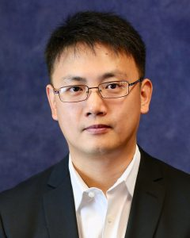

Principal Investigator
Dr. Tao Huan
Associate Professor in Analytical and Bioanalytical Chemistry at the University of British Columbia and Canada Research Chair in Metabolomics and Exposomics.

Profile
Advancing metabolomics from instrument-level measurement to biological interpretation.
Dr. Huan leads a multidisciplinary research program that advances the analytical performance of mass spectrometry in global metabolomics and brings metabolomics into systems biology. His group develops analytical and bioinformatic technologies for broader metabolomic coverage, improved metabolite identification, and more confident interpretation of complex biological and environmental samples.
He received his Ph.D. in Analytical Chemistry from the University of Alberta, where he worked with Dr. Liang Li on chemical isotope labelling liquid chromatography-mass spectrometry-based metabolomics. He then completed postdoctoral training with Dr. Gary Siuzdak at The Scripps Research Institute, developing metabolomics-guided systems biology approaches for understanding disease mechanisms. He joined the Department of Chemistry at UBC as an Assistant Professor in 2018 and became Associate Professor with tenure in 2024.
Research Interests
Current Opportunities
The Huan Lab has open opportunities for motivated undergraduate students, graduate students, and postdoctoral fellows interested in analytical mass spectrometry, metabolomics, exposomics, bioinformatics, artificial intelligence, and systems biology.
Contact the labHonors, Awards, and Recognition
Selected recent recognition for contributions to metabolomics, exposomics, analytical chemistry, and measurement science.
Memberships and Affiliations
Dr. Huan is affiliated with interdisciplinary UBC programs and research clusters spanning bioinformatics, genome science, brain health, artificial intelligence, social exposomics, and microplastics research.